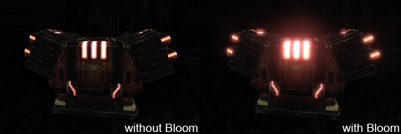
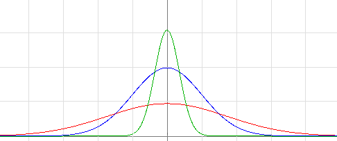
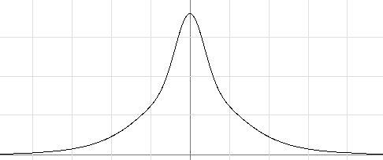

光溢出后期处理特效

概述
光溢出(Bloom)是真实世界中的一种光照现象，可以使得渲染的图像感觉更加真实，它的渲染性能消耗是中等级别。当我们裸眼看非常暗的背景上的非常亮的对象时就会看到这种光溢出现象。尽管比较亮的对象也会产生其它的效果(条纹、镜头眩光)，但是经典的光溢出效果不包括这些。因为我们显示器(比如TV、TFT...)通常不支持HDR（高动态范围），所以我们实际上不能渲染非常亮的对象。反之，当光源射到薄膜(薄膜表面散射)或者相机前面(乳白玻璃过滤器)时，我们模拟在眼睛中出现的效果(视网膜表面散射)。从物理上讲这个效果并不是非常正确的，但是它可以帮助表现对象的相对亮度或者给LDR（低动态范围）图片添加真实性。
光溢出属性
在 UberPostProcessEffect 节点的后期处理链中可以找到用于调整光溢出的属性。
注意： 在其他节点中也可以找到光溢出属性(比如 DOFAndBloomEffect )，但不应该使用这些节点，它们的存在仅适用于向后兼容性(或许会运行没有进行优化的代码或简化的功能集)。
这里的大部分属性也可以在 PostProcessVolumes（后期处理体积） 、*WorldProperties(世界属性)* 、 CameraActor（相机对象） 及某些可访问的!UnrealScript结构体中找到。这些设置和其它的后期处理特效一样遵循通常的覆盖行为。
以下图片使用不同的调整属性显示了同样的内容：
 |
左上角: 默认光溢出设置
右上角： 较大的 KernelSize(核心大小)
左下角： 较小的 Threshold（阈值）
右下角： 有一个蓝色的 Tint(色彩) |
这是这些属性在编辑器(链)中的出现位置：
 注意，大部分关卡都会在 PostProcessVolumes 或 WorldPoperties 中覆盖这些主要设置。
注意，大部分关卡都会在 PostProcessVolumes 或 WorldPoperties 中覆盖这些主要设置。
调整光溢出形状
光溢出通常是通过使用可分离的高斯模糊核心来实现的。这可以产生高效的模糊效果(尽管这个效果扩展可以得到宽度和高度大小，但是性能随着核心的半径呈线性关系)。
通过使用高斯模糊并把这个效果和源效果叠加地混合到一起，并不是我们想要看到的确切效果。对于第一次近似这个效果是可以的(很多发行的游戏都具有这种效果)，但是当提高质量要求时，光溢出应该在亮的部分附近有更多的细节，并且应该有一个较宽范围的衰减。为了完成这个处理，我们可以选择性地添加另外的一个或两个Gaussians（高斯）分布。可以在 UberPostProcessEffect 节点中调整这三个高斯曲线的半径和权重。以下图片显示了把这种效果应用到游戏内容时所呈现的外观：
 |
左上角: 没有光溢出效果，对象的亮度不能很好地显示。
右上角： 一个单独高斯分布对于左边的对象来说可以工作的很好但对右侧对象就不是很好了。
左下角： 使用两个高斯曲线可以在两个对象上都工作的很好。
右下角： 使用三个高斯分布添加了微妙的美观的大范围的闪光。 |
以下图片显示了高斯分布曲线的外观:
 |
| 这个图显示了一段有限宽度的高斯分布曲线。 |
具有不同缩放比例和尺寸的三个高斯曲线可以组合到一起：
|  |
红色: 大的高斯曲线
蓝色: 中等高斯曲线
绿色: 小的高斯曲线 |
通过添加这些分布曲线，我们可以获得我们想看到的形状：
|  |
| 新的形状在中间部分尖锐，随着距离增加范围变得更加宽泛。 |
可以在编辑器中(请参照上面的编辑器图片中的“Shape（形状）”部分)或通过使用控制台命令(请参照页面底部)来调整形状。
低分辨率中的模糊
光溢出可以在较低的分辨率中完成，并且不会牺牲太多的质量。我们使用四分之一分辨率(1/16区域)可以获得很好的体验。可分离的高斯模糊可以使用较大的半径，即时有些时候它的性能消耗很高。这里我们甚至可以在较低的分辨率中进行计算，从而节约渲染器性能。
为了向后兼容，我们目前默认有一个单独的高斯曲线(权重： 0/1/0). 一旦用户为不同系统指定了它们所使用的或大或小的权重量后， 新的系统以一半的分辨率进行中等级别的高斯模糊(这意味着它使得性能加速但同时也降低了质量)。然而，较小的高斯模糊以正常的光溢出分辨率完成。大的高斯模糊以中等级别的高斯模糊的分辨率的一半完成。这使得非常大的半径产生非常低的性能消耗。
色调映射器交互
光溢出是在色调映射之前添加到场景中的，以便获得最好的质量。这意味着被附近的区域光溢出进一步照亮的明亮区域会柔和地覆盖到LDR的最大极限(通常这意味着是白色，但是对于鲜明的颜色它可以是不同的颜色)。如果光益处对这样明亮区域的细节有负面的影响，则应该调整 ScreenBlendThreshold(屏幕混合阈值) 属性。
 |
| 注意在非常明亮区域的细微差别。 |
性能及实现细节
因为我们使用了可分离的高斯模糊方法，所以我们的性能消耗几乎是随着半径呈线形比例变化的。半径也和屏幕分辨率（更精确的视图宽度）成比例关系， 对于1280分辨率来说 KernelSize 以像素为单位进行定义。我们把核心大小限制为64(性能原因，并为了有较少的着色器变种)。由于分辨率较低，所以我们可以在像素着色器中仅使用16次查找来完成处理(半径62->宽度128->四分之一分辨率32，16个双线性过滤样本)。如果使用了多个高斯模糊，那么中间的高斯模糊是一半的分辨率，大的高斯模糊是1/4分辨率。这会影响质量和性能。最终的图片是通过额外渲染次数组合到一起达到的效果。(可以改进)。
经验之谈，我们仅在使用大半径(64+)时看到了高于 旧的/默认 方法的性能改进。
有用的控制台命令
-
BloomScale - 调整光溢出的强度。
-
BloomSize - 调整过溢出效果的尺寸。
-
BloomType - 调整内部使用的方法。
-
BloomWeightSmall - 调整较小高斯模糊的权重(在正规化之后，和UI属性属性不一样)。
-
BloomWeightLarge - 调整较大高斯模糊的权重(在正规化之后，和UI属性属性不一样)。
移动设备支持
在移动设备平台，光溢出只有在系统设置中启用后才会起作用。它是一个高级的移动设备功能，而且十分昂贵，所以在启用的时候千万要小心。移动设备光溢出设置可以在 MobilePostProcess 标题下的 DefaultPostProcessSettings 中进行设置。 注意，您必须至少覆盖 MobilePostProcess 下的 Bloom_Scale 、 Bloom_Threshold 或 Bloom_Tint 才能真正地启用光溢出。此外还要注意如果在 WorldInfo 中指定了这些值，那么会在启用光溢出后使用它们，即使没有在Property（属性）列表中覆盖这些值。